Svalbard reindeer
The data are from my post-doc. We will analyze the probability of a reindeer to have a baby during the summer. In this system, one of the most important environmental factors is the presence of rain-on-snow events. These occur when precipitation occurs during the winter. These freeze and then form a thick layer of ice that blocks access to food resources.
However, as the Arctic continues to warm, some researchers believe that the ros will no longer have an effect. When there are sustained rain events followed by a warm period, the rain causes a release of food resources and has time to run off before freezing. We will attempt to explore these changes in the effect of ros.
library(dplyr)
library(readr)
library(ggplot2)
library(tidyr)
library(cowplot)
library(lubridate)
dat <- read_csv("../donnees/SvalbardDat.csv")
dat <- dat %>% mutate(age=year-yrbirth) %>% filter(age>1)
ros <- read_csv("../donnees/ROS.csv")dat <- dat %>% left_join(ros) %>%
mutate(rosNorm = scale(log(ros)),
ages=scale(age),
age2=ages^2,
obsid=1:n(),
period=cut(year,breaks = seq(1994,2020,by=5)))We first transform the predictors: - rosNorm is the logarithm of ros, normalized to have a mean of 0 and a standard deviation of 1. - we create a variable age2 for the quadratic effect of age - and finally a period variable that separates the study into 5 periods
g1 <- dat %>% group_by(age) %>% summarise(mc=mean(calf,na.rm=T),n()) %>%
ggplot(aes(age,mc))+geom_point()
g2 <- dat %>% group_by(period,year,rosNorm) %>% summarise(mc=mean(calf,na.rm=T),n()) %>%
ggplot(aes(rosNorm,mc,color=period))+geom_point()+geom_smooth(method = lm,se=F)+guides(color='none')
plot_grid(g1,g2)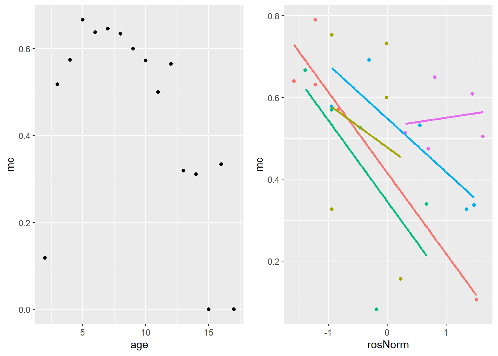
Of course, we will also need to control for the age of the individuals. The model will therefore be a binomial model with age and ros as fixed effects. The random effects will consist of the year, the period and a slope of the ros varying with the period.
Notes:
The model formula in brm follows the same syntax as
lmer for the specification of fixed and random
effects.
Although it would be possible to add a random country effect on
the age:ros interaction, year, ID, density and several
other control variables. We omit them here to reduce the computational
time of the models.
A Choose a priori distributions for the
parameters of the model described above. Here is an example of code
where only the specification of the distributions is missing. The first
four lines define the a priori distributions for the intercept
and coefficients of the three fixed effects, the next three define the
distributions for the standard deviations of the random effects
(class = "sd"), while the last one refers to the standard
deviation of the individual observations
(class = "sigma").
library(brms)
my_prior <- c(set_prior("", class = "Intercept"),
set_prior("", class = "b", coef = "ages"),
set_prior("", class = "b", coef = "age2"),
set_prior("", class = "b", coef = "rosNorm"),
set_prior("", class = "sd", coef = "Intercept", group = "id"),
set_prior("", class = "sd", coef = "Intercept", group = "period"),
set_prior("", class = "sd", coef = "rosNorm", group = "period"))It is recommended to choose normal distributions in all cases. For
‘sd’, these distributions will be interpreted as half-normal because it
is implied that these parameters are \(\geq
0\). To choose the mean and standard deviation of each normal
distribution, consider the interpretation of each parameter and in
particular the scales of the predictors ros ,
ages and age2. In bmrs, the family used will
be family=bernoulli("logit").
As for the standard deviations of the random effects (“sd”), their distribution a priori can have the same width as that of the corresponding “b” coefficient.
library(brms)
my_prior <- c(set_prior("normal(0,1.5)", class = "Intercept"),
set_prior("normal(.5,.25)", class = "b", coef = "ages"),
set_prior("normal(-.5,.25)", class = "b", coef = "age2"),
set_prior("normal(0,.25)", class = "b", coef = "rosNorm"),
# set_prior("normal(0,.5)", class = "sd", coef = "Intercept", group = "id"),
set_prior("normal(0,1)", class = "sd", coef = "Intercept", group = "period"),
set_prior("normal(0,.5)", class = "sd", coef = "rosNorm", group = "period"))the intercept will be centered around 0 with an sd=1.5. This results in a rather uninformative prior on the probability scale. The priorities for age are chosen to go from about 0 to a reasonable value. This is positive for ages and negative for age2. This results in an inverted U shape for the age effect. The prior for ros is normal(0,.5), the mean is not very informative (centered on 0), the sd=0.5 means that the slope could go from -1 to 1 (2*sd). In a binomial regression context with standardized explanatory variables, a slope of 1 is considered a strong effect.
B Now draw a sample of the joint a priori
distribution of parameters with brm. I suggest specifying
chains = 1, iter = 1500, warmup = 1000 to produce a single
Markov chain with 1000 run-in iterations and 500 sample iterations. Then
visualize the distribution of calf predicted for each
iteration of the a priori parameters.
res_prior <- brm(calf ~ ages+age2+rosNorm +(rosNorm|period),family=bernoulli("logit"),
prior = my_prior,sample_prior = "only",
data = dat,chains = 1, iter = 3000, warmup = 1000)summary(res_prior)## Family: bernoulli
## Links: mu = logit
## Formula: calf ~ ages + age2 + rosNorm + (rosNorm | period)
## Data: dat (Number of observations: 1922)
## Draws: 1 chains, each with iter = 3000; warmup = 1000; thin = 1;
## total post-warmup draws = 2000
##
## Group-Level Effects:
## ~period (Number of levels: 5)
## Estimate Est.Error l-95% CI u-95% CI Rhat Bulk_ESS
## sd(Intercept) 0.80 0.61 0.03 2.26 1.00 1609
## sd(rosNorm) 0.40 0.31 0.01 1.17 1.00 1935
## cor(Intercept,rosNorm) -0.00 0.58 -0.94 0.96 1.00 3091
## Tail_ESS
## sd(Intercept) 943
## sd(rosNorm) 1188
## cor(Intercept,rosNorm) 1002
##
## Population-Level Effects:
## Estimate Est.Error l-95% CI u-95% CI Rhat Bulk_ESS Tail_ESS
## Intercept 0.51 1.50 -2.42 3.37 1.00 2586 1502
## ages 0.49 0.25 0.01 0.98 1.00 3377 1347
## age2 -0.50 0.26 -0.99 0.01 1.00 3715 1239
## rosNorm 0.01 0.25 -0.48 0.50 1.00 3602 1447
##
## Draws were sampled using sampling(NUTS). For each parameter, Bulk_ESS
## and Tail_ESS are effective sample size measures, and Rhat is the potential
## scale reduction factor on split chains (at convergence, Rhat = 1).prior_params <- as_draws_df(res_prior) %>% mutate(id=1:n())
hist(prior_params$b_Intercept) # prior on the link scale 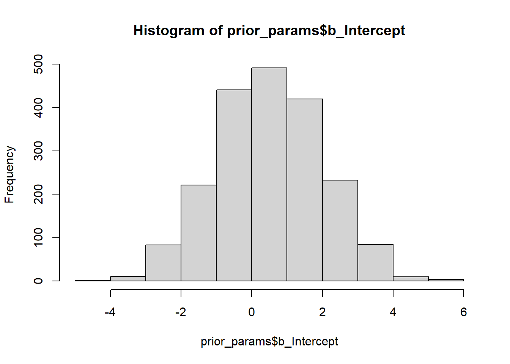
hist(plogis(prior_params$b_Intercept)) #prior on the response scale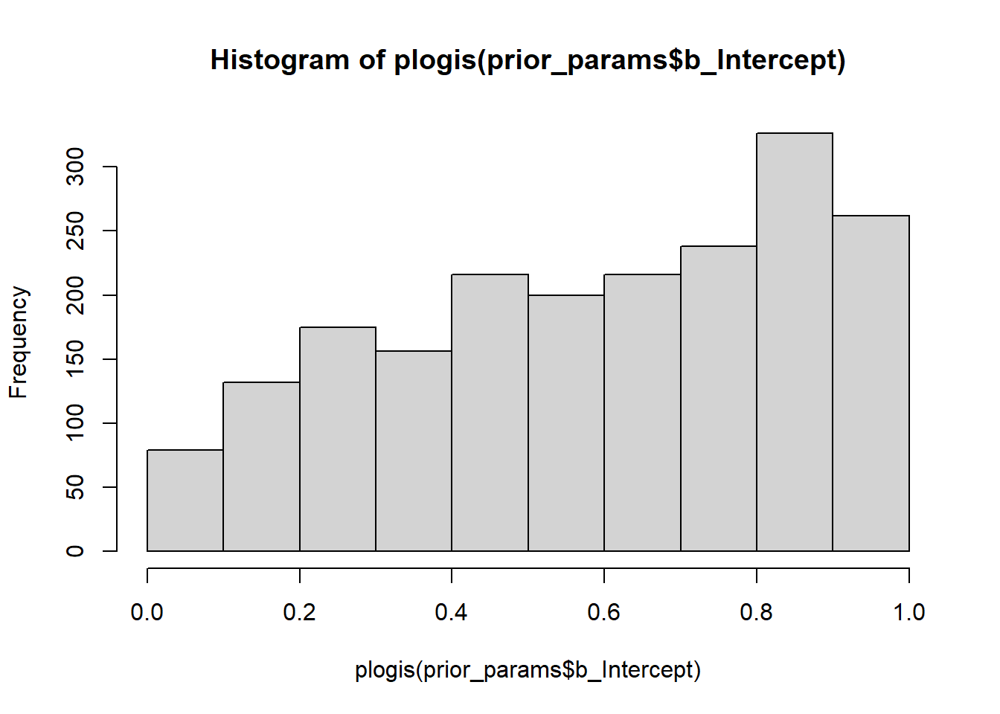
hist(prior_params$sd_period__Intercept) 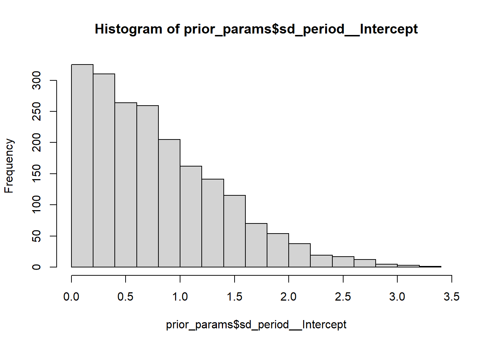
# simulate predicted response according to
# the parameter simulated from the prior
prior_pred <- posterior_predict(res_prior) # simulate response variable (calf)
prior_df <- data.frame(prior_pred)[1:200,] # only keep 200 to keep it ligth
prior_df$sim_id <- 1:nrow(prior_df)
prior_df <- pivot_longer(prior_df, cols = -sim_id,
names_to = "obsid", values_to = "calfprior") %>%
mutate(obsid=as.numeric(substr(obsid,2,9))) # pivot it for easier manip and extrat observation id
# look a the distribution of the prior predicted calf.
# this is not very informative since it's all 0 or 1
ggplot(prior_df, aes(x = calfprior)) +
stat_density(aes(group = sim_id), position = "identity", geom = "line", alpha = 0.3) 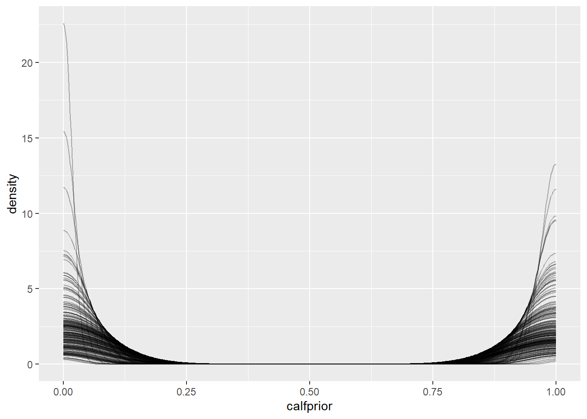
# lets join those prediction with the dataset to look at
# the prior prediction as a function different predictor.
# first age. The priors are more extreme than expected.
# in this casse, its because it is accumulating effects of the intercept
# and the random effects
prior_df <- prior_df %>% left_join(dat)
prior_df %>% ggplot(aes(x=as.factor(round(ages,2)),y=calfprior))+geom_violin()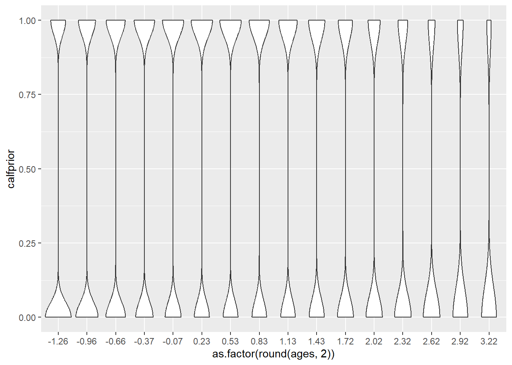
# but if we look at the average tendencies, they have the right shape
# starting low, going high and then decreasing
ggplot(prior_df,aes(x=age,y=calfprior))+
geom_smooth(aes(group = sim_id),method="glm",formula = y~x+I(x^2),method.args = list(family='binomial'),se=F,linewidth=0.2)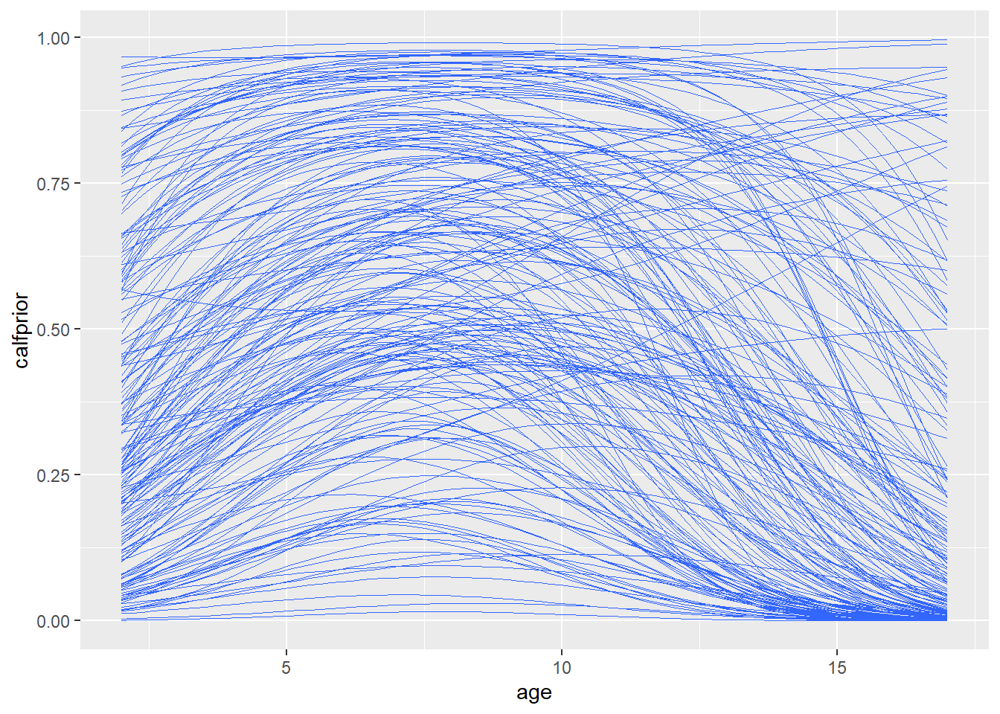
# we can also look at the prior predictions fort the effect of ros
ggplot(prior_df,aes(x=rosNorm,y=calfprior))+
geom_smooth(aes(group = sim_id),method="glm",formula = y~x,method.args = list(family='binomial'),se=F,linewidth=0.2)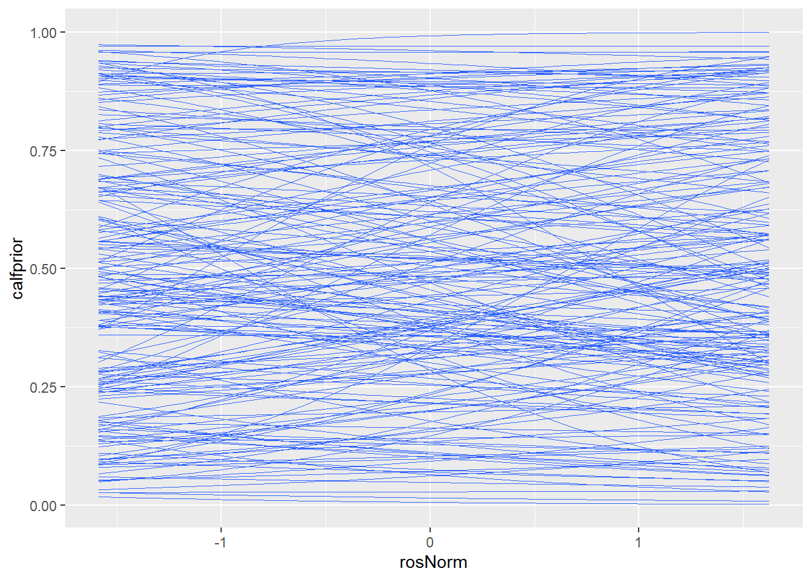
# it can sometime be useful to look at derivative measure not directly modeled.
# they can sometimes reveal unexpected modeling issue
# in this case, lets look at the number of calves per female duroing their life
# the predicted value seem to fit well with the observes value in blue
prior_df %>%group_by(sim_id,id) %>% summarise(calfprior=sum(calfprior)) %>%
ggplot(aes(x=calfprior))+
stat_density(aes(group = sim_id), position = "identity", geom = "line", alpha = 0.3)+
stat_density(data=data.frame(calfprior=tapply(dat$calf,INDEX = dat$id,FUN = sum)),
aes(x=calfprior),
position = "identity",
geom = "line", color="blue")+
coord_cartesian(ylim=c(0,1))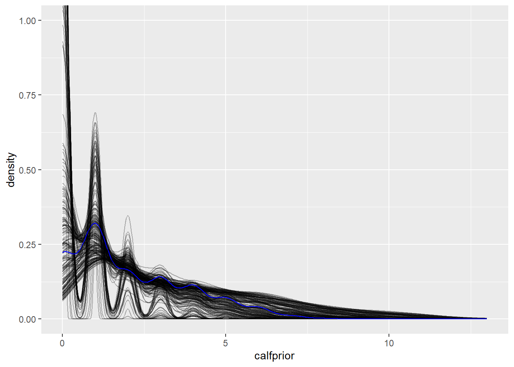
# while the prior prediction per age seemed extreme, those by period seem fine
# and end up being pretty vague
prior_df %>%group_by(sim_id,period) %>% summarise(calfprior=mean(calfprior)) %>%
ggplot(aes(x=as.factor(period),y=calfprior))+geom_violin()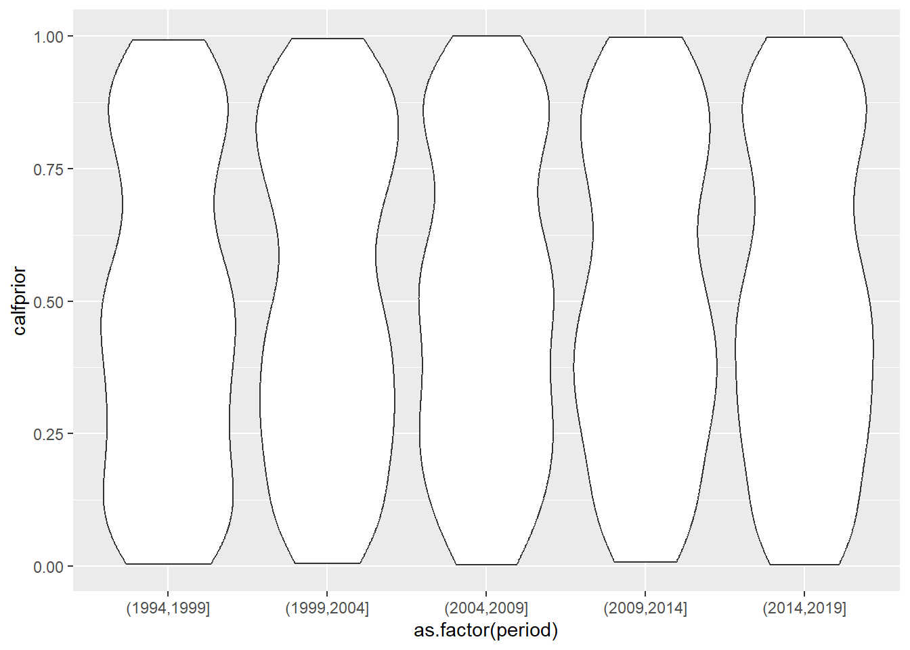
Because of the large number of effects estimated and the fact that we
are imposing only mild constraints on each distribution a
priori, extreme or even impossible values (large positive and
negative values) are to be expected; the important thing is that the
density is larger within a realistic range. It may be useful to “zoom
in” on part of the ggplot by adding
coord_cartesian(xlim = c(..., ...), ylim = c(..., ...))
with limits in \(x\) and \(y\).
C Now fit the model with brm. You can
reduce the number of Markov chains to 2 to save time, but keep the
default values for the number of iterations. (You can ignore the warning
that the effective sample size or ESS is small). How can you evaluate
the convergence of the model?
res_br <- brm(calf ~ ages+age2+rosNorm +(rosNorm|period),family=bernoulli("logit"),
prior = my_prior,iter = 4000,thin=2,
data = dat,chains = 2)# as draws esxtracts the posterios (or priors) and arranges them in a df
post_params <- as_draws_df(res_br)
mcmc_plot(res_br, type = "trace") # see trace plots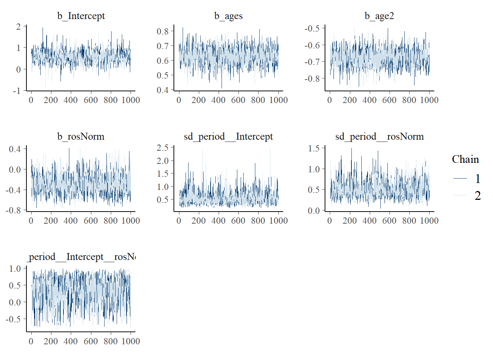
mcmc_plot(res_br, type = "acf_bar") # see autocorrelation plots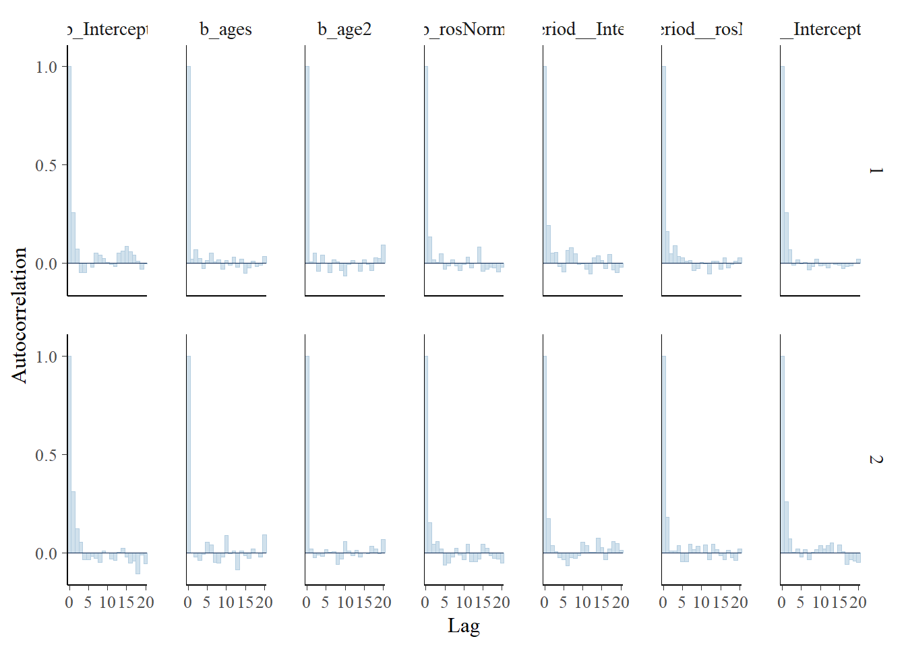
# see parameter esimates and CI (50 and 95%) for a given variable
mcmc_plot(res_br,variable = 'r_period', type = "intervals")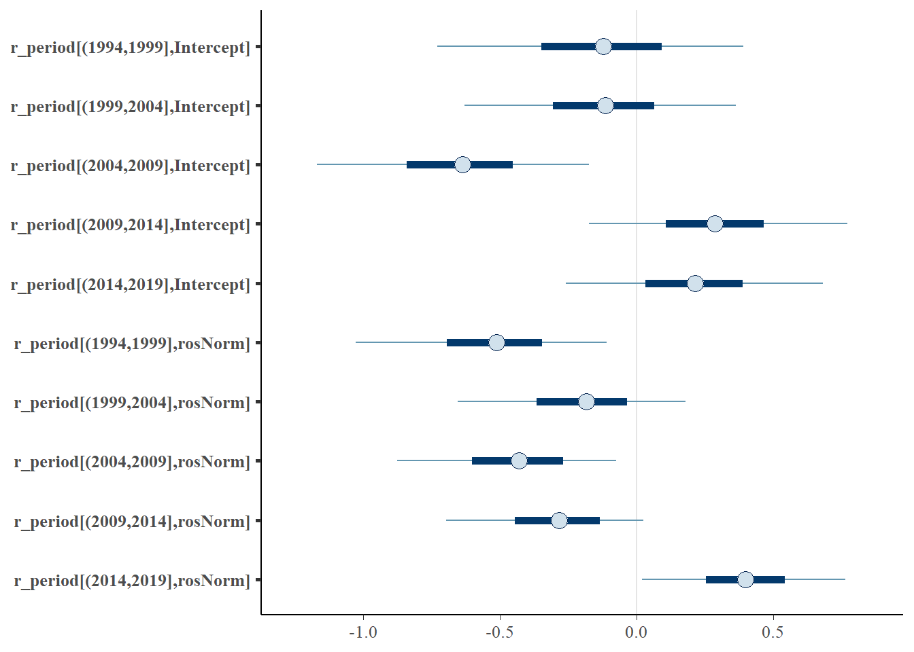
# compare prior to posterior distributions
rbind(
post_params[,c( "b_Intercept","b_ages","b_age2","b_rosNorm",
"sd_period__Intercept" ,"sd_period__rosNorm" )] %>%
mutate(post=T),
prior_params[,c( "b_Intercept","b_ages","b_age2","b_rosNorm",
"sd_period__Intercept" ,"sd_period__rosNorm" )]%>%
mutate(post=F)
) %>% pivot_longer(-post) %>%
ggplot(aes(x=value))+geom_density(aes(color=post))+facet_wrap(~name,scales = "free_x")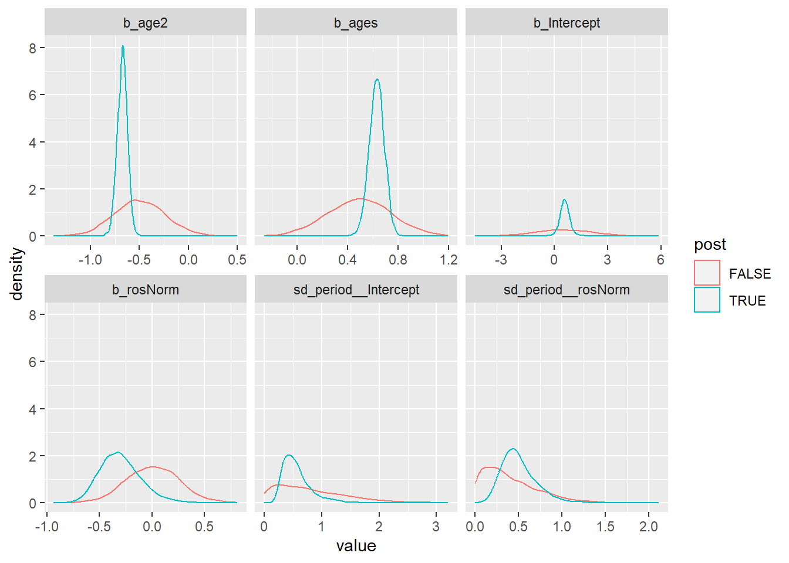
# perform posterior predictive check
pp_check(res_br, type = "stat", stat = function(x) sum(x == 1))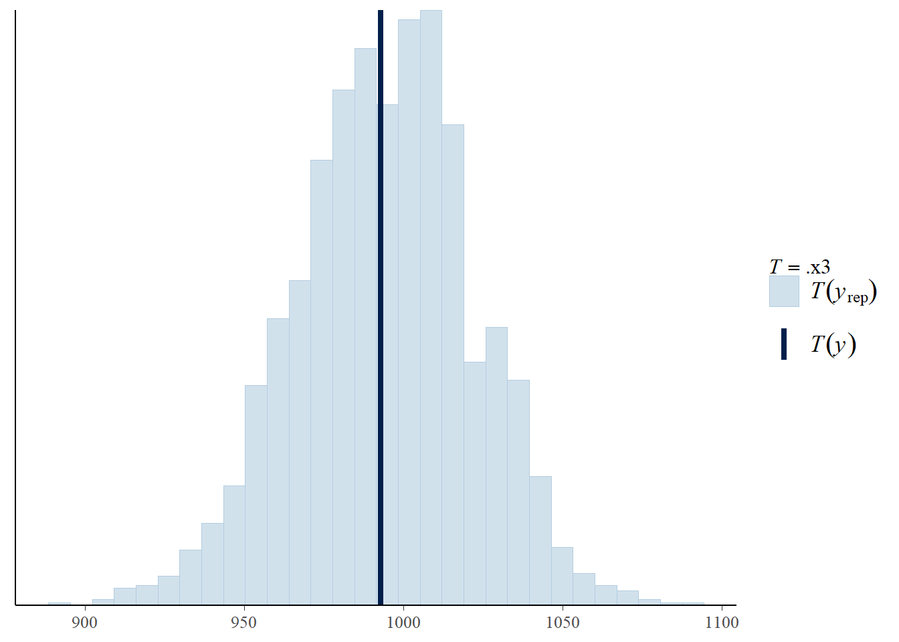
Convergeance seems fine and data was informative enough to change the posterior compared to the prior. the model had a bit more difficulty with the random effects and main effect of ros due to the lower effective sample size ( you really only have 5 ros value for each period compared to the 2000 points to estimate the effects of age)
D Compare the magnitude of the `rosNorm’ coefficient to that of the random effects. What does this comparison tell you?
summary(res_br)## Family: bernoulli
## Links: mu = logit
## Formula: calf ~ ages + age2 + rosNorm + (rosNorm | period)
## Data: dat (Number of observations: 1922)
## Draws: 2 chains, each with iter = 4000; warmup = 2000; thin = 2;
## total post-warmup draws = 2000
##
## Group-Level Effects:
## ~period (Number of levels: 5)
## Estimate Est.Error l-95% CI u-95% CI Rhat Bulk_ESS
## sd(Intercept) 0.56 0.26 0.24 1.23 1.00 1383
## sd(rosNorm) 0.50 0.20 0.20 0.97 1.00 1294
## cor(Intercept,rosNorm) 0.32 0.40 -0.56 0.91 1.00 1237
## Tail_ESS
## sd(Intercept) 1451
## sd(rosNorm) 1641
## cor(Intercept,rosNorm) 1522
##
## Population-Level Effects:
## Estimate Est.Error l-95% CI u-95% CI Rhat Bulk_ESS Tail_ESS
## Intercept 0.58 0.29 0.03 1.16 1.00 1141 1215
## ages 0.63 0.06 0.51 0.74 1.00 1852 1746
## age2 -0.67 0.05 -0.78 -0.58 1.00 1919 1811
## rosNorm -0.30 0.19 -0.63 0.13 1.00 1397 1716
##
## Draws were sampled using sampling(NUTS). For each parameter, Bulk_ESS
## and Tail_ESS are effective sample size measures, and Rhat is the potential
## scale reduction factor on split chains (at convergence, Rhat = 1).the sd of the random slope in large compared to the main effect, large enough that the different period could have different signs
E Check posterior: Apply predict to the
model to get the mean, standard deviation and 95% interval for the
hindcast prediction. You can give a data.frame to the newdata
argument to get the desired predictions
(expand.grid(rosNorm=seq(-1.6,1.6,l=30),period=unique(dat$period),...)).
Illustrate the model predictions and their credibility intervals for the
different periods for a 7 year old individual.
# we make the first prediction by changing all age to 0,
# in effect controlling for this nuisance variable
# the re_formula lets us chose which random effect to account for in the prediction
post_pred <- posterior_epred(res_br,
newdata = mutate(dat,ages=0,age2=0),
re_formula =~(rosNorm|period))
dat$y=apply(post_pred,2,mean)
dat$y.sd=apply(post_pred,2,sd)
dat$ymin=apply(post_pred,2,function(x) quantile(x,0.025))
dat$ymax=apply(post_pred,2,function(x) quantile(x,0.975))
pt <- dat %>% group_by(period,year) %>% summarise_if(is.numeric,mean)
# we can also start from a whole new dataframe, by using a sequence from
# the minimum to maximum observed ros (l= length.out= length of this sequence)
# this will allow us to enough points that if we link them,
# it looks like a prediction line
newd=expand.grid(ages=0,age2=0,rosNorm=seq(-1.6,1.6,l=30),period=unique(dat$period),id="W16")
post_pred2 <- posterior_epred(res_br,newdata =newd, re_formula =~(rosNorm|period) )
newd$y=apply(post_pred2,2,mean)
newd$y.sd=apply(post_pred2,2,sd)
newd$ymin=apply(post_pred2,2,function(x) quantile(x,0.025))
newd$ymax=apply(post_pred2,2,function(x) quantile(x,0.975))
ggplot(newd,aes(x=rosNorm,y=y))+
geom_point(data=pt)+
geom_ribbon(aes(fill=period,ymin=ymin,ymax=ymax),alpha=0.2)+
geom_path(aes(color=period))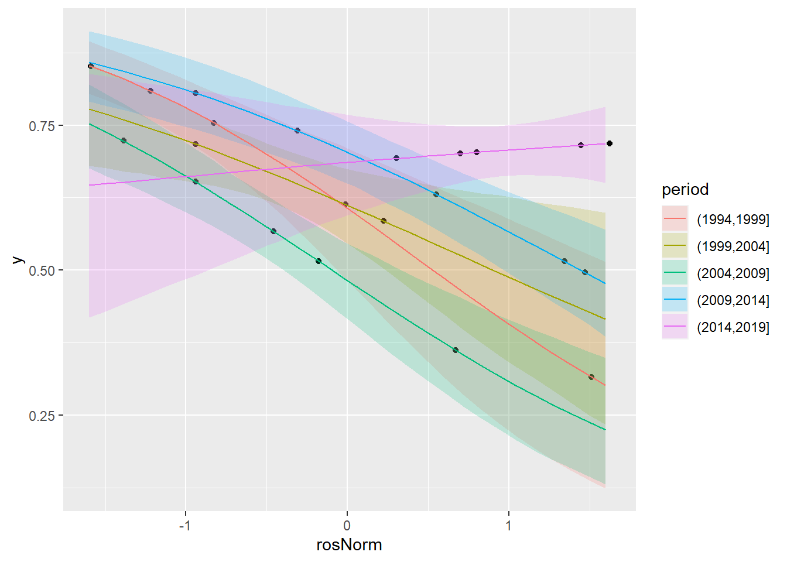
# we can do the same to illustrate the effect of age while controling for the
# effect of ros
post_pred <- posterior_epred(res_br,
newdata = mutate(dat,rosNorm=0),
re_formula =NA)
dat$y=apply(post_pred,2,mean)
dat$y.sd=apply(post_pred,2,sd)
dat$ymin=apply(post_pred,2,function(x) quantile(x,0.025))
dat$ymax=apply(post_pred,2,function(x) quantile(x,0.975))
pt <- dat %>% group_by(period,age,year) %>% summarise_if(is.numeric,mean)
newd=dat %>% select(age,ages,age2) %>% unique() %>% mutate(rosNorm=0)
post_pred2 <- posterior_epred(res_br,newdata =newd, re_formula =NA)
newd$y=apply(post_pred2,2,mean)
newd$y.sd=apply(post_pred2,2,sd)
newd$ymin=apply(post_pred2,2,function(x) quantile(x,0.025))
newd$ymax=apply(post_pred2,2,function(x) quantile(x,0.975))
ggplot(newd)+
stat_summary(data=pt,aes(x=age,y=calf),fun.data = 'mean_cl_boot',geom='pointrange')+
geom_ribbon(aes(x=age,y=y,ymin=ymin,ymax=ymax),alpha=0.2)+
geom_line(aes(x=age,y=y,ymin=ymin,ymax=ymax))## Warning in geom_line(aes(x = age, y = y, ymin = ymin, ymax = ymax)): Ignoring
## unknown aesthetics: ymin and ymax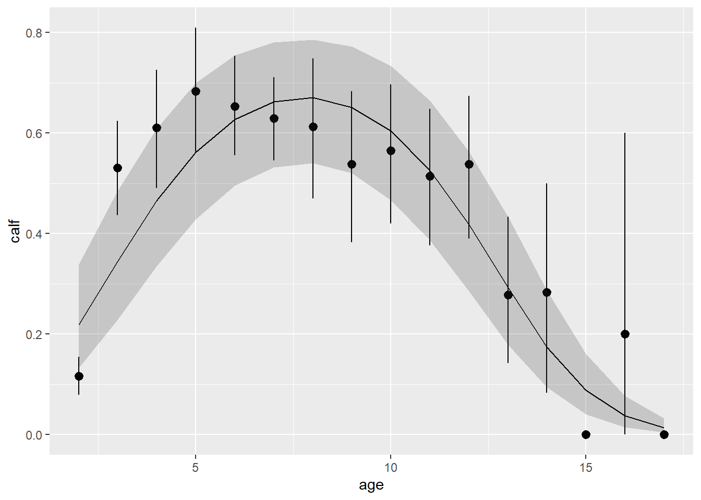